Casa Eluney: dos casas, un mismo terreno
En el corazón de Bariloche, a minutos del Centro Cívico. Elegí Pequeña Eluney para una escapada íntima o Gran Eluney para una estadía en grupo.
Un terreno, dos refugios
Pequeña Eluney y Gran Eluney comparten el mismo terreno en Barrio La Cumbre, a menos de 5 minutos del Centro Cívico de Bariloche. Podés alquilar una sola casa o las dos juntas para reunir a todo el grupo.
Elegí tu casa
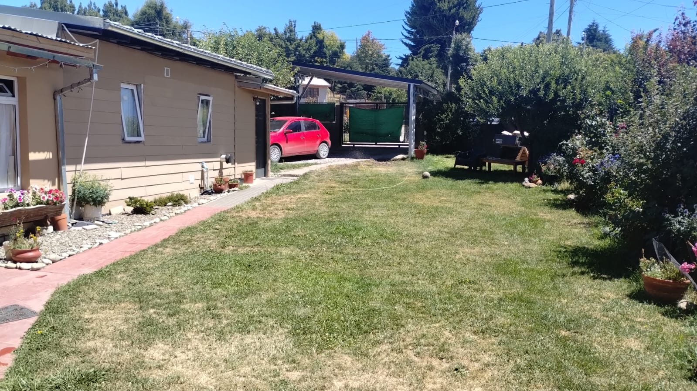
Pequeña Eluney
La casa principal del complejo, ideal para una estadía íntima
Gran Eluney
Ambientes amplios, con living, comedor y cocina integrados
Eluney
El nombre de la casa es un homenaje a Eluney, nuestra perra: amigable, juguetona y con una energía que no se cansa nunca. Le encanta jugar a la pelota, corretear por el jardín y salir a la nieve en invierno — es la mejor compañera, siempre lista para saludar con la cola moviéndose.
Es probable que te la encuentres paseando por el terreno durante tu estadía.
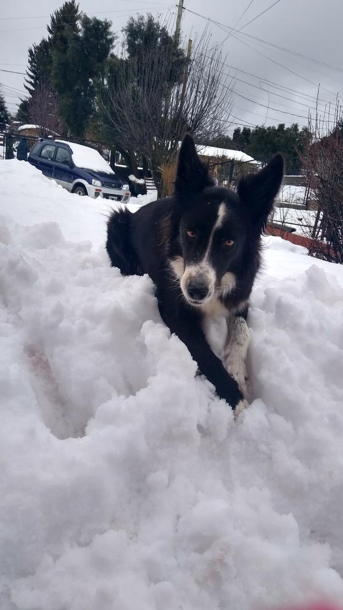
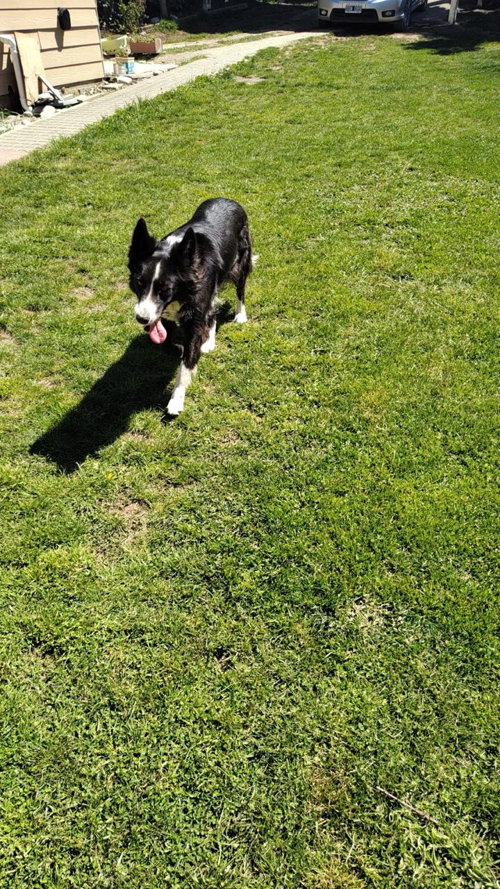
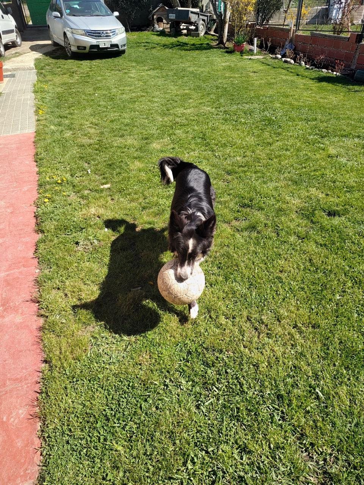
Todas las estaciones, mismo paisaje
Nieve en invierno, verde y sol en verano — así se vive el terreno durante todo el año.
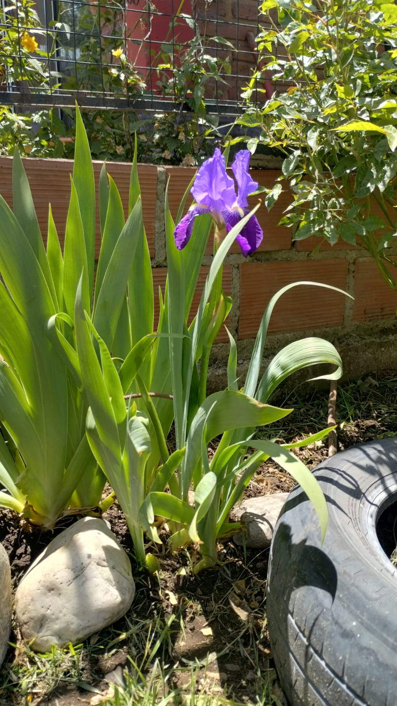
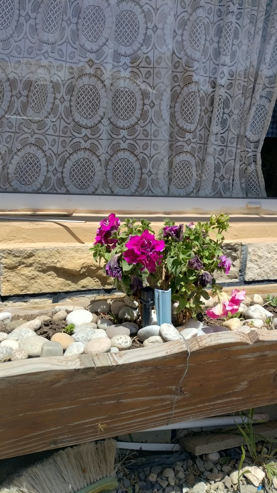
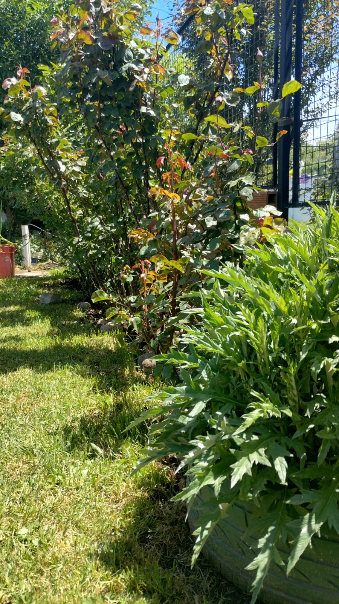
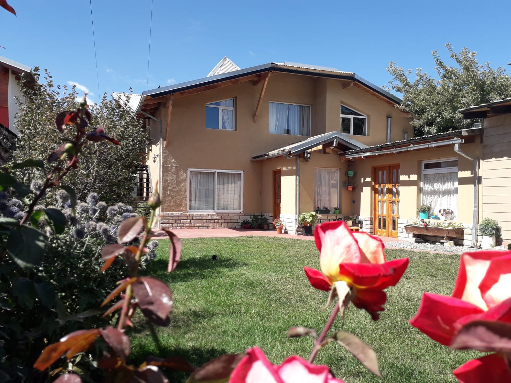
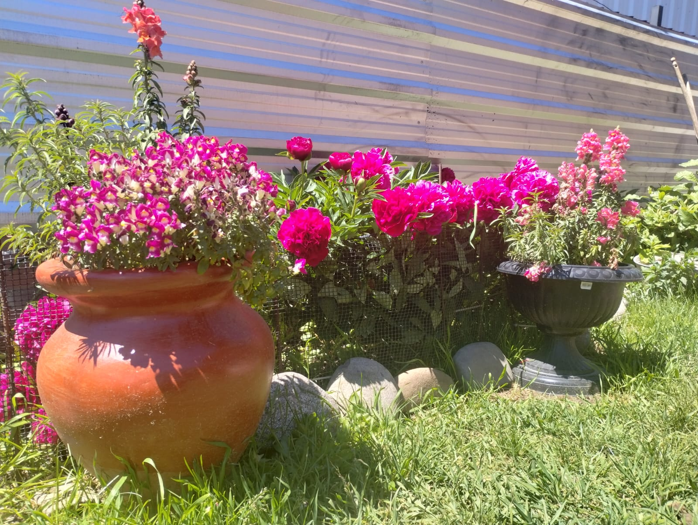
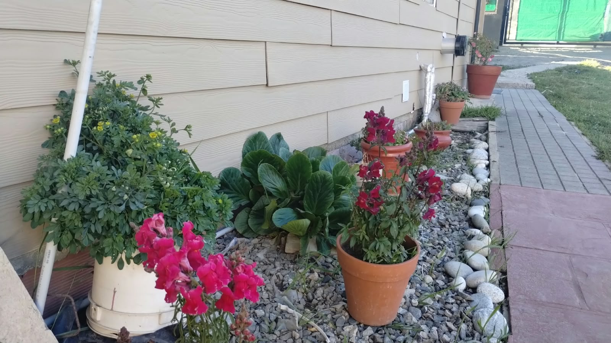
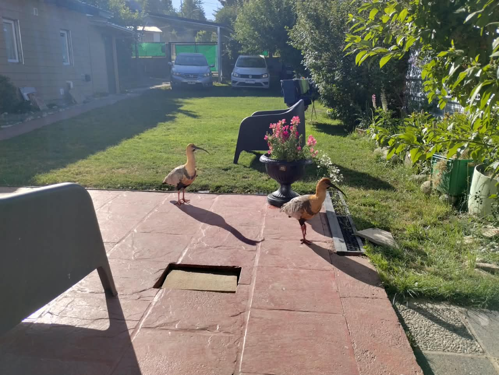
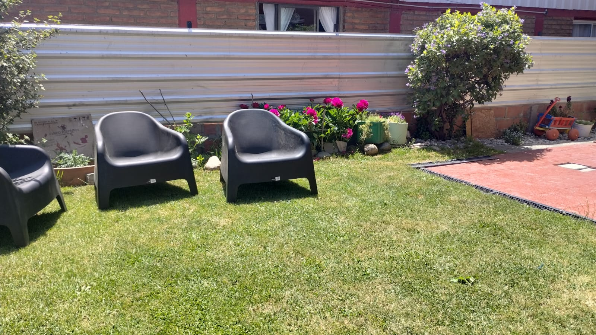

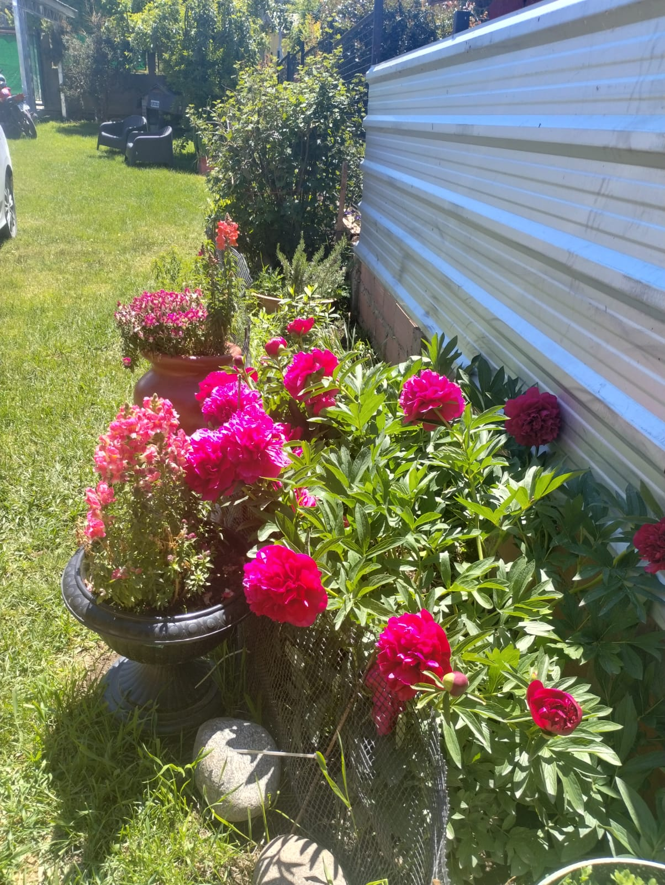
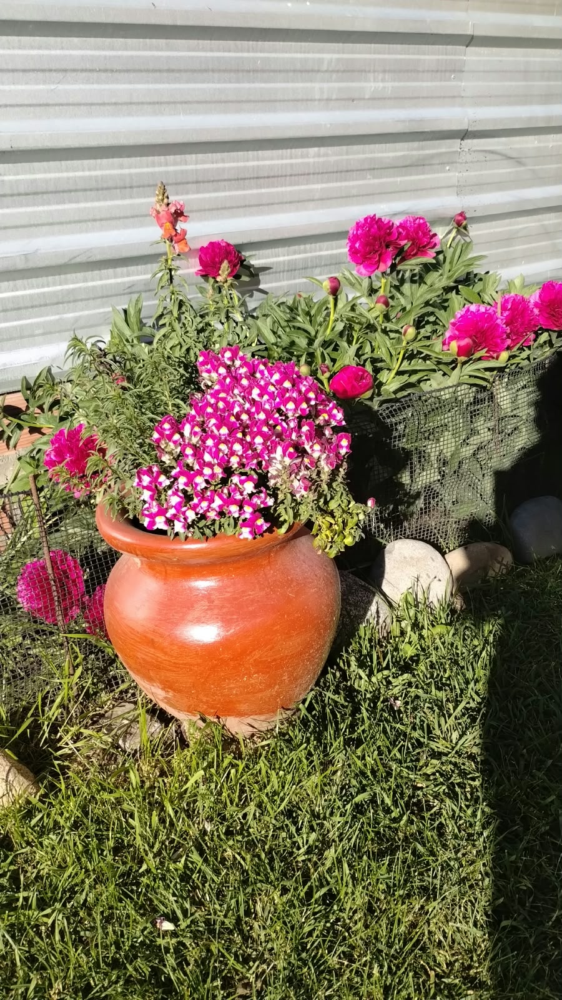
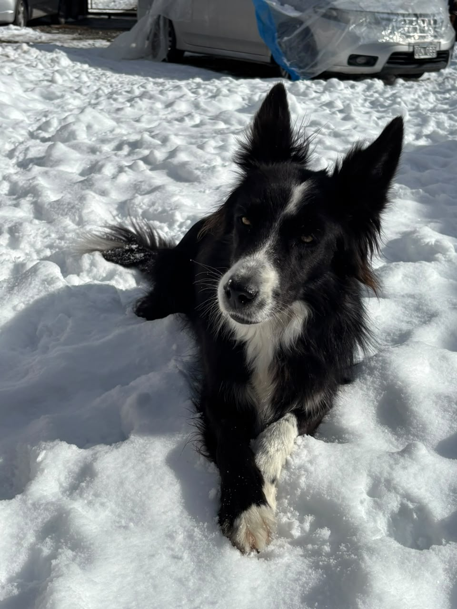
Dónde estamos
Tronador 2084, Barrio La Cumbre, San Carlos de Bariloche — a menos de 5 minutos del Centro Cívico y muy cerca de los accesos a las rutas de excursión.
Preguntar por la ubicación →Actividades cerca de Bariloche
Lagos, montañas y caminatas a un paso del complejo — todo lo que hace de Bariloche un destino para todo el año.


¿Consultamos tu estadía?
Escribinos por WhatsApp o seguinos en Instagram para ver más fotos del complejo.